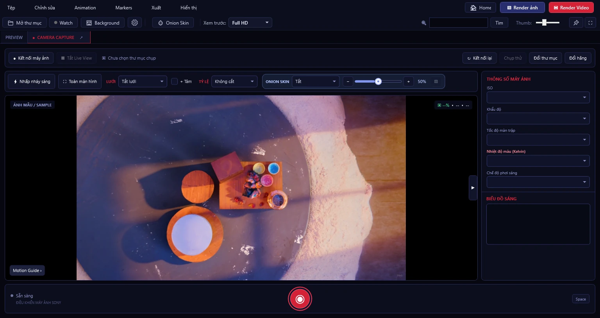
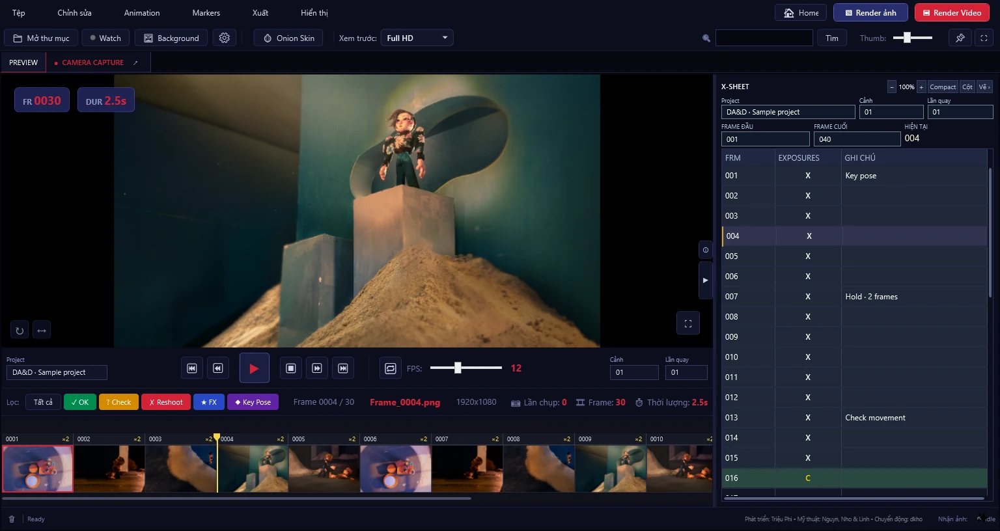
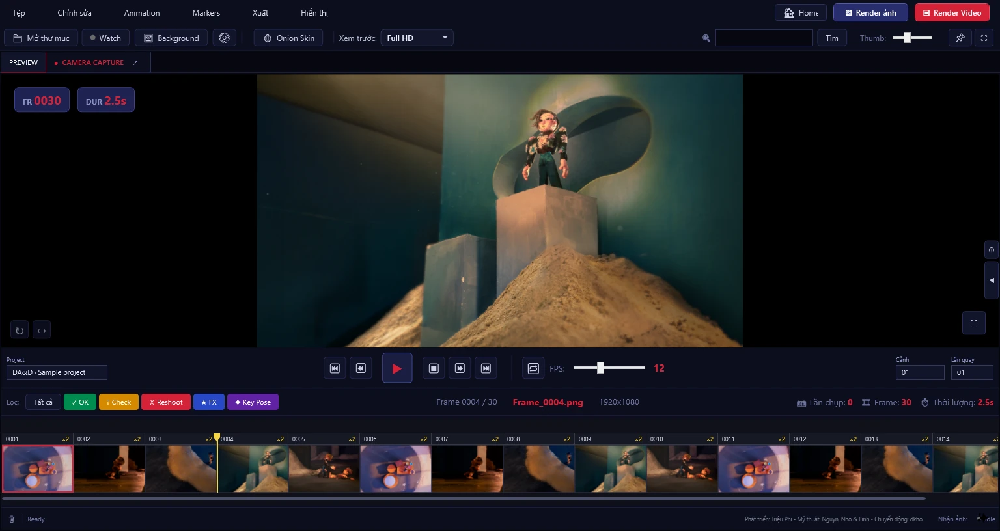
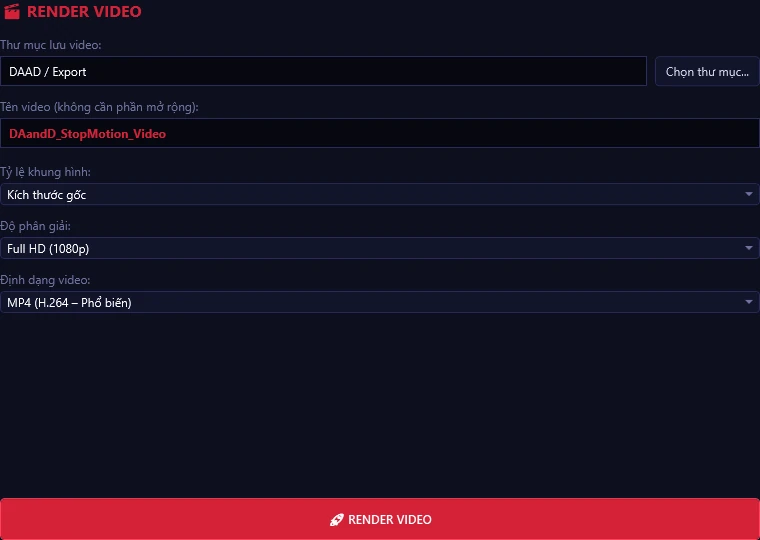
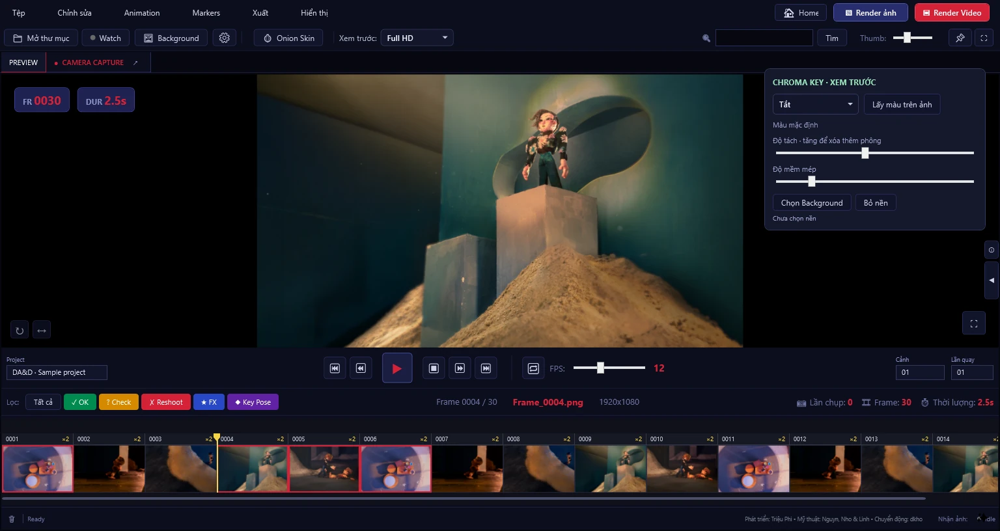
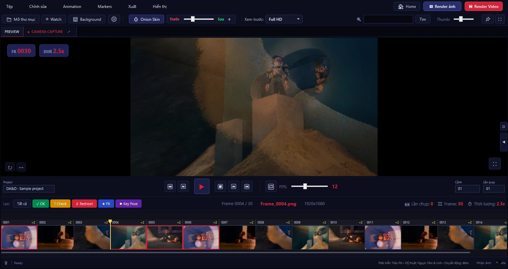
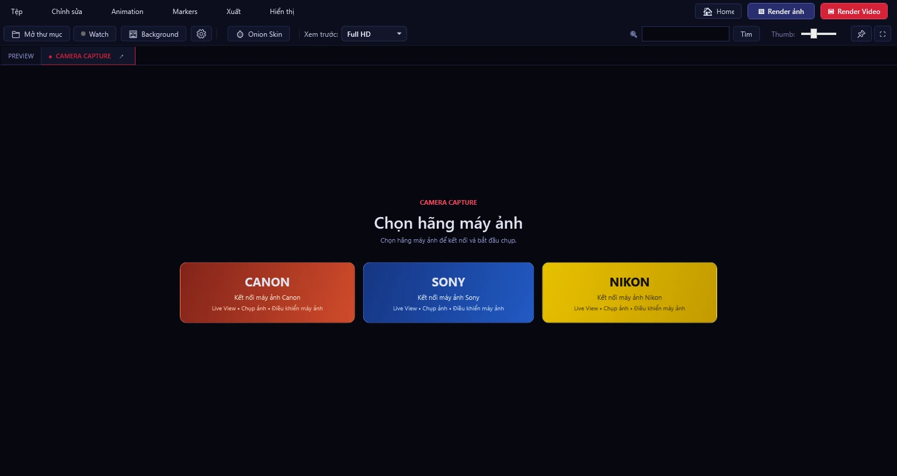

FRAME 1assets/images/app/product-frame-1.webp

16:9 / PRODUCT FRAMESCLICK / NEXT FRAME
DA&D StopMotion đồng hành từ chụp ảnh, tạo chuyển động, xem lại, chụp lại / chỉnh sửa đến xuất thành phẩm.


Năm bước liền mạch trong cùng một không gian làm việc.

Chụp từng khung hình.

Điều chỉnh nhịp và chuyển động.

Xem lại để kiểm tra chuyển động.

Chụp lại hoặc chỉnh sửa frame.

Xuất video và bộ ảnh hậu kỳ.
Chụp, chỉnh sửa, xem lại và hoàn thiện từng khung hình trong cùng một không gian làm việc.
Kết nối máy ảnh, theo dõi Live View và đưa ảnh chụp trực tiếp vào timeline.
Sắp xếp, nhân bản, điều chỉnh Hold và chỉnh sửa từng frame ngay trên timeline.
Xem lại theo FPS, lặp vùng A–B và kiểm tra chuyển động ở chế độ toàn màn hình.
Theo dõi frame, exposure và ghi chú để kiểm soát nhịp chuyển động của từng shot.

Xem thử ghép nền bằng Chroma Key và kiểm tra độ sáng với Flicker Detection.

Chồng các frame để so sánh vị trí và điều chỉnh chuyển động giữa từng lần chụp.
Project DA&D lưu cấu trúc và trạng thái làm việc, trong khi media nguồn vẫn là file thật trên ổ đĩa. Điều này giúp workflow dễ kiểm tra, sao lưu và chuyển tiếp sang hậu kỳ.
Chụp trực tiếp từ Camera Capture hoặc theo dõi một thư mục ảnh đang nhận file mới.
Gắn Production / Scene / Take, sắp xếp frame, Hold, nhóm hoặc di chuyển media theo nhu cầu.
Playback, Onion Skin, X-Sheet và các công cụ Preview hỗ trợ kiểm tra từng frame.
Có thể đóng gói project cùng media liên quan hoặc xuất sequence được đánh số để chuyển tiếp sang hậu kỳ.
Kết nối máy ảnh và bắt đầu chụp ngay trong DA&D StopMotion.

DA&D tách rõ trải nghiệm Preview và dữ liệu nguồn. Các lớp hỗ trợ như Onion Skin, grid hay Chroma Preview không được ghi đè vào ảnh gốc.
Renderer hiện có lựa chọn tỷ lệ Gốc, 16:9, 9:16, 1:1, 4:3 và 2.39:1 cùng các mức 720p, 1080p, 4K và Max Setting.
Xuất bộ ảnh theo thứ tự frame, đánh số từ 0001 đến frame cuối, vào các folder JPG, RAW và BACKGROUND.
Hỗ trợ xuất folder RAW tương ứng nếu bạn chụp RAW.